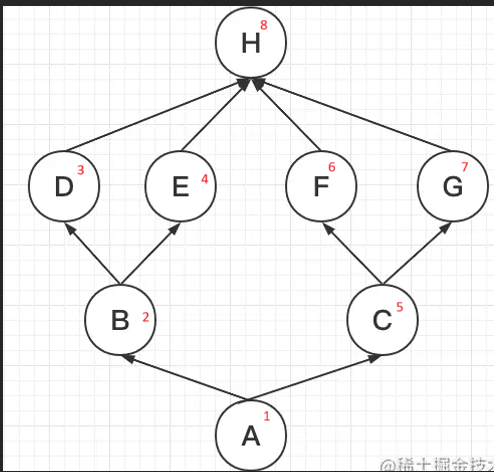
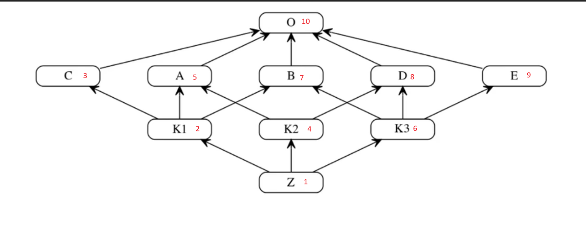

Класи
📚 Корисні ресурси
- Офіційна документація Python 3.7: Classes
- First Look at Classes (офіційно)
- TutorialsPoint — Python Classes & Objects
🔑 ТЕРМІНИ
- Клас — це шаблон або креслення для створення об’єктів. Він описує, які властивості (атрибути) та поведінку (методи) матимуть об’єкти (екземпляри) цього класу.
-
Об'єкт - екземпляр класу
-
self — це перший параметр усіх методів екземпляра класу в Python. Через нього метод має доступ до атрибутів і методів конкретного об’єкта.Хоча слово self — не зарезервоване (можна назвати як завгодно), це прийнятий стандарт Python, і його завжди потрібно писати першим аргументом у методах об'єкта.
-
класові змінні (class variables) або атрибути класу
- Зберігаються на рівні класу.
- Спільні для всіх екземплярів класу.
- Якщо змінити їх через клас — зміни побачать усі екземпляри.
- Оголошуються всередині класу, але поза методами.
class Dog:
species = "Canis lupus" # класова змінна
def __init__(self, name):
self.name = name # атрибут екземпляра
d1 = Dog("Rex")
d2 = Dog("Buddy")
print(d1.species) # Canis lupus
print(d2.species) # Canis lupus
Dog.species = "Canis familiaris"
print(d1.species) # Canis familiaris
print(d2.species) # Canis familiaris
- атрибути екземпляра (instance attributes)
- Створюються в методі init або динамічно.
- Унікальні для кожного об’єкта (екземпляру класу).
- Зберігаються в словнику dict кожного об'єкта.
class Dog:
def __init__(self, name):
self.name = name # атрибут екземпляра
d1 = Dog("Rex")
d2 = Dog("Buddy")
print(d1.name) # Rex
print(d2.name) # Buddy
- Метод — це функція, яка належить до класу і працює з його об'єктами (екземплярами) або з самим класом. Розрізняють:
- Звичайний метод (instance method)
- Працює з конкретним об'єктом
- в якості параметра отримує self
- Метод класу (class method)
- Працює з самим класом
- в якості параметра отримує cls
- Статичний метод (static method)
- Просто утилітна функція в класі
- Звичайний метод (instance method)
Звичайний метод (instance method)
class Person:
def __init__(self, name):
self.name = name
def say_hello(self): # звичайний метод
print(f"Привіт, я {self.name}")
p = Person("Олена")
p.say_hello() # Привіт, я Олена
Метод класу (class method)
class Cat:
species = "Кіт"
@classmethod
def get_species(cls):
print(f"Всі належать до: {cls.species}")
Cat.get_species() # Всі належать до: Кіт
Статичний метод (static method)
class Math:
@staticmethod
def add(a, b):
return a + b
print(Math.add(3, 5)) # 8
🧱 СТВОРЕННЯ КЛАСУ
class TestClass():
counter = 0 #змінна(атрибут) класу
def __init__(self, name, surname): # магічний метод-ініціалізатор, про магічні методи інформація нижче
self.name = name #атрибут екземпляру класу, унікальний для кожного
self.surname = surname
🧱 СТВОРЕННЯ ЕКЗЕМПЛЯРУ КЛАСУ
test_obj_1 = TestClass('Ihor', 'Petrenko')
test_obj_2 = TestClass('Solomia', 'Drizd')
#виклик атрибутів екземплярів (окремих об'єктів)
print(test_obj_1.name)
#Виведе Ihor
print(test_obj_2.name)
#Виведе Solomia
СТВОРЕННЯ КАСТОМНОГО МЕТОДУ КЛАСУ
- якщо ми плануємо в кастомному методі працювати з атрибутами екземпляру, то першим параметром методу вказується self
class TestClass():
counter = 0 #змінна(атрибут) класу
def __init__(self, name, surname):
self.name = name #атрибут екземпляру класу, унікальний для кожного
self.surname = surname
def do_something(self): #кастомний метод
print(f'Name: {self.name}')
print(f'Surname: {self.surname}')
✏️ ЗМІНА АТРИБУТІВ
class Person:
def __init__(self, name):
self.name = name
def greet(self): # метод
print(f"Hello, {self.name}!")
p = Person("Alice")
p.greet() # Hello, Alice!
p.age = 30 # Додаємо новий атрибут
p.name = "Bob" # Змінюємо існуючий
del p.age # Видаляємо атрибут
НАСЛІДУВАННЯ
Типи наслідування:
- Однорівненве (Single) - [Parent ← Child] - Клас доповнює або змінює єдиного батька
- Багаторівневе (Multilevel) [Grandparent ← Parent ←Child] Кілька рівнів спадкоємності
- Ієрархічне (Hierarchical) - [Parent ← {Child1, Child2}] - Багато дочірніх класів з однаковою базовою поведінкою
- Множинне (Multiple) - [{Base1, Base2} → Sub] - Об’єднання функцій кількох незалежних батьків
- Гібридне (Hybrid) - Змішана Комбінація multilevel, multiple, hierarchical за потребою
class Animal:
def speak(self):
print("Some sound")
class Dog(Animal):
def speak(self):
print("Bark!")
d = Dog()
d.speak() # Bark!
- якщо ми не будемо перевизначати логіку метода-ініціалізатора, то нічого не дописуємо в класу нащадкові
- якщо ми плануємо переписувати метод-ініціалізатор (наприклад, для того щоб передавати додаткові аргументи при ініціалізації екземпляру), треба вказувати в новому методі вираз super().__init()__ ЯЯкщо його не застосувати то не буде виконано логіки методу-ініціалізатору батьківського-класу
class Animal:
def __init__(self, type):
self.type = type
def speak(self):
print("Some sound")
class Dog(Animal):
def __init__(self, type, sub_type):
super().init(type)
self.sub_type = sub_type
def speak(self):
print("Bark!")
d = Dog("савець", 'canis lupus')
print(d.type)
print(d.sub_type)
d.speak() # Bark!
MRO
C3 Linearization

class H:
pass
class D(H):
pass
class E(H):
pass
class F(H):
pass
class G(H):
pass
class B(D, E):
pass
class C(F, G):
pass
class A(B, C):
pass
def show_mro(cls_name):
return [c.__name__ for c in cls_name.mro()]
print(*show_mro(A), sep = ' -> ')
# ВИВОДИТЬ
A -> B -> D -> E -> C -> F -> G -> H -> object

class O:
pass
class C(O):
pass
class A(O):
pass
class B(O):
pass
class D(O):
pass
class E(O):
pass
class K1(C, A, B):
pass
class K2(A, D):
pass
class K3(B, D, E):
pass
class Z(K1, K2, K3):
pass
def show_mro(cls_name):
return [c.__name__ for c in cls_name.mro()]
print(*show_mro(Z), sep = ' -> ')
# ВИВОДИТЬ
Z -> K1 -> C -> K2 -> A -> K3 -> B -> D -> E -> O -> object
Агрегація і композиція
Приклад агрегації
class Engine:
def start(self):
print("Двигун запущено")
class Car:
def __init__(self, engine):
self.engine = engine # агрегація — об'єкт передається ззовні
def drive(self):
self.engine.start()
print("Авто їде")
# Створимо Engine окремо
engine = Engine()
# Передаємо його в Car
car = Car(engine)
car.drive()
🔍 Engine існує окремо від Car. Можемо використати один engine для кількох машин або замінити його.
Приклад композиції
class Engine:
def start(self):
print("Двигун запущено")
class Car:
def __init__(self):
self.engine = Engine() # створюється всередині Car — композиція
def drive(self):
self.engine.start()
print("Авто їде")
car = Car()
car.drive()
🔍 Engine створюється всередині Car. Якщо Car зникне — двигун більше не існує.
ПОЛІМОРФІЗМ
Поліморфізм (від грец. πολύμορφος — "багатоформність") — це концепція об'єктно-орієнтованого програмування, яка дозволяє використовувати один і той самий інтерфейс (метод, функцію, оператор) для об'єктів різних класів.
У Python поліморфізм означає, що одна й та сама операція або метод може мати різну реалізацію для різних типів об'єктів.
🔧 Приклад 1: Метод з однаковою назвою в різних класах. Duck typing приклад - "якщо щось виглядає як качка і крякає як качка — воно качка"
class Dog:
def speak(self):
return "Гав!"
class Cat:
def speak(self):
return "Мяу!"
# Поліморфізм: одна функція працює з різними типами об'єктів
def animal_sound(animal):
print(animal.speak())
dog = Dog()
cat = Cat()
animal_sound(dog) # Гав!
animal_sound(cat) # Мяу!
✅ Метод speak() викликається незалежно від типу тварини — і це приклад поліморфізму. Тут немає спільного батьківського класу, але об'єкти поводяться однаково, бо мають метод walk() — це і є duck typing.
🔁 Приклад 2: Поліморфізм через наслідування
class Animal:
def speak(self):
raise NotImplementedError("Цей метод треба перевизначити в підкласі")
class Cow(Animal):
def speak(self):
return "Мууу"
class Duck(Animal):
def speak(self):
return "Кря-кря"
animals = [Cow(), Duck()]
for animal in animals:
print(animal.speak())
✅ Кожен об'єкт реалізує свою версію методу speak(), хоча вони всі наслідуються від одного базового класу.
Поліморфізм у Python:
-
дозволяє створювати код, який працює з об'єктами різних класів однаково,
-
спрощує масштабування та підтримку коду,
-
є ключовою частиною принципів ООП разом з наслідуванням, інкапсуляцією та абстракцією.
ІНКАПСУЛЯЦІЯ
Інкапсуляція — це принцип об'єктно-орієнтованого програмування (ООП), який:
✅ Приховує внутрішню реалізацію об'єкта (дані і логіку) ✅ Дозволяє доступ до них тільки через визначений інтерфейс (методи)
Простими словами: Ми «ховаємо» внутрішні змінні та деталі реалізації, щоб інші частини програми не могли їх змінювати напряму, а тільки через методи.
🧱 У Python немає справжнього «приватного» як у Java чи C++, але… Python використовує домовленість, а не заборону:
- "name" - публічний (public) доступний ззовні
- "_name" - protected (умовно) «не чіпай без потреби»
- "__name" - приватний (private) - напряму не можна в коді поза классом звернутися до такого імені, Python змінює ім’я внутрішньо (манглінг).
Name mangling
Name mangling — це механізм, який Python застосовує до "приватних" атрибутів, тобто тих, що починаються з подвійного підкреслення (__).
📌 Він автоматично перейменовує ці атрибути, щоб захистити їх від випадкового
доступу або перезапису, особливо при успадкуванні класів.
class MyClass:
def __init__(self):
self.__secret = "це приховано"
def reveal(self):
return self.__secret
obj = MyClass()
print(obj.reveal()) # ✅ "це приховано"
# print(obj.__secret) # ❌ AttributeError: немає такого атрибута
print(obj._MyClass__secret) # 🔓 "це приховано" — манглінг!
🔧 МАГІЧНІ МЕТОДИ (dunder methods)
Магічні методи (вони ж спеціальні методи, dunder methods — від double underscore) — це методи, які мають подвійну нижню риску на початку і в кінці імені, наприклад:
Вони дозволяють керувати поведінкою об'єктів, коли ти:
- створюєш об'єкт,
- викликаєш його як функцію,
- додаєш об’єкти через +,
- викликаєш функції len(), str() тощо.
🧠 Навіщо вони потрібні? Магічні методи дозволяють перевизначати стандартну поведінку Python для твоїх об'єктів.
- першим параметром цього методу завжди іде self, що вказує на екземпляр
- наступним ідуть довільні параметри, які передаватимуться при створенні об'єкта
__new__ Цей метод є реальним конструктором об'єкту (екземпляру класу). Викликається автоматично при створенні функції. І на цьому етапі створюється екземпляр
__init__ - метод - ініціалізатор Цей метод в джерелах називається методом конструктором, хоча насправді ним не являється. А насправді є методом ініціалізатором. Бо викликається після методу __new__. При виклику методу вже можна отримати id від селф. Тобто на цей момент об'єкт вже існує. який викликається автоматично при створенні екземпляру (об'єкту) класу.
class Person:
def __init__(self, name):
self.name = name
p = Person("Оля")
print(p.name) # Оля
__del__ Викликається автоматично, при знищенні екземпляру
__str__ - як об’єкт виглядає в print() Перезаписує логіку прінта об'єкта. Перезаписує яка саме вивожиться інфа для виразу print(obj)
__repr__ Робить те ж саме, що і __str__ Відмінність в тому, що викликається після. Саме ця функція викликається, коли в інтерпретаторі ми вводиом просто ім'я змінної, натискаємо Ентер і нам виводить значення змінної.
__add__ — для операції +
class Point:
def __init__(self, x, y):
self.x = x
self.y = y
def __add__(self, other):
return Point(self.x + other.x, self.y + other.y)
def __str__(self):
return f"({self.x}, {self.y})"
p1 = Point(1, 2)
p2 = Point(3, 4)
print(p1 + p2) # (4, 6)
__eq__ — заміняє логіка для оператора ==
class Cat:
def __init__(self, name):
self.name = name
def __eq__(self, other):
return self.name == other.name
print(Cat("Мурка") == Cat("Мурка")) # True
🔹 __len__ — для функції len()
class MyList:
def __init__(self, items):
self.items = items
def __len__(self):
return len(self.items)
ml = MyList([1, 2, 3])
print(len(ml)) # 3
Магічних методів є набагато більше. Подивитись їх перелік можемо, використовуючи функцію dir()